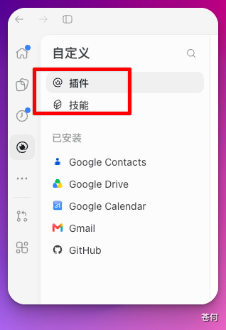
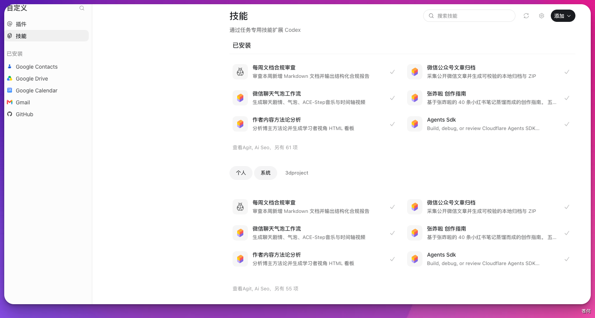
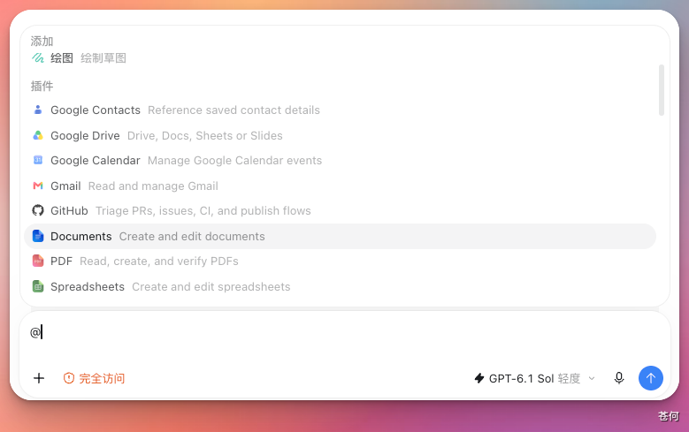
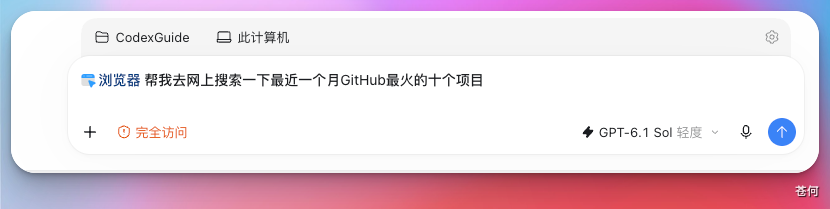

Codex 里有两个经常一起出现、但含义不同的概念：Skills 和 Plugins。
Skill是告诉 Codex 某类任务该怎么做的可复用流程说明。Plugin则是安装和分发单元，能把 Skills、MCP、Hooks、App 集成和资源文件打包到一起。
如果你在 App 中看到了和技能、插件相关的入口，可以先用这张图定位它们：

三个核心概念#
理解这三者最快的方式，是把 AGENTS.md、Skill、Plugin 放在一起看：
| 概念 | 解决什么问题 | 更像什么 |
|---|---|---|
AGENTS.md |
这个项目里所有任务都要遵守什么规则 | 项目工作守则 |
Skill |
某一类重复任务应该怎么做 | 专项操作手册 |
Plugin |
如何安装、分发和组合能力 | 能力安装包 |
AGENTS.md 像是项目里的通用工作规则，Skill 则是某一类任务的专项流程。写 PR Review、整理飞书文档、生成 PPT、修复 CI、做安全扫描，这些流程如果经常重复，就适合沉淀成 Skill。
和 AGENTS.md 一样，Agent Skills 正在成为 coding agent 生态里的通用规范。
Agent Skills 标准#
Agent Skills 是一个开放格式标准，旨在复用优秀的工作流，补充知识库等提示词、脚本、文档。Codex 支持它。标准里，一个 Skill 至少包含 SKILL.md，用 YAML frontmatter 写元数据，用 Markdown 写执行说明。
一个最小的 SKILL.md 如下：
---
name: doc-review
description: Review Markdown documentation for structure, factual accuracy, links, and unclear wording. Use when the user asks to review or improve docs.
---
Read the target document first.
Check whether claims are backed by sources.
Report concrete issues before rewriting.对应的目录结构通常是：
doc-review/
├── SKILL.md
├── scripts/
├── references/
└── assets/其中只有 SKILL.md 是必需的，其他目录都是可选的。
对于 SKILL.md ，标准里最重要的是 name 和 description：
| 字段 | 是否必需 | 作用 |
|---|---|---|
name |
是 | Skill 的稳定名称，通常使用小写字母、数字和连字符 |
description |
是 | 告诉 agent 这个 Skill 做什么，以及什么时候应该用 |
name 要和父目录名保持一致。例如目录叫 pdf-processing/，frontmatter 里的 name 也应该是 pdf-processing。
description 很关键，因为 Codex 会用它判断什么时候该启用这个 Skill。好的描述要同时写清“能力”和“触发场景”：
description: Convert PDFs into clean Obsidian Markdown notes with headings, formulas, and source references. Use when the user asks to turn a PDF into study notes.不太好的写法是：
description: Helps with documents.后者太空，Codex 很难判断什么时候该用。
Agent Skills 标准还定义了这些可选字段：
| 字段 | 作用 |
|---|---|
license |
声明 Skill 的许可证，或指向随 Skill 一起打包的许可证文件 |
compatibility |
说明运行环境要求，例如面向哪个 agent、是否需要系统依赖或网络访问 |
metadata |
存放实现方自定义的键值信息 |
allowed-tools |
实验字段，用来声明预批准工具；不同 agent 的支持程度可能不同 |
Skill 目录结构#
通常，SKILL.md 放入口说明，配套材料放到旁边目录，让 agent 先读最小必要信息，需要时再打开脚本、参考资料或模板。
| 目录 | 适合放什么 | 例子 |
|---|---|---|
scripts/ |
可执行脚本 | PDF 提取、批量格式化、校验脚本 |
references/ |
按需读取的长文档 | API 规则、写作规范、公司流程 |
assets/ |
模板、图片、数据文件 | PPT 模板、表格模板、示例图 |
一般做法是：SKILL.md 放“什么时候用、按什么步骤做”；长规则、脚本和素材放到旁边目录里。不要把 Skill 写成一个超长提示词仓库。
标准与 Codex 的差异#
这里有两层：Agent Skills 标准定义跨 agent 都能理解的通用结构；Codex 在这个标准之上加入自己的发现路径、上下文预算、启用方式、插件分发和 UI 元数据。例如 .agents/openai.yaml 可补充 UI 展示名称、调用策略和工具依赖声明，但它不是标准本身必需的。
容易混淆的地方主要在于：
| 主题 | Agent Skills 标准 | Codex 实现 |
|---|---|---|
| 基础结构 | SKILL.md 必需，scripts/、references/、assets/ 可选 |
支持这套结构，并可额外使用 agents/openai.yaml |
| 元数据 | name、description 必需；license、compatibility、metadata、allowed-tools 可选 |
读取 name 和 description 做技能列表与匹配；agents/openai.yaml 可补 UI、策略和工具依赖 |
| 发现位置 | 标准只规定 Skill 自身结构，不规定某个客户端必须从哪里扫描 | Codex 会扫描仓库、用户、管理员和系统位置 |
| 加载方式 | 推荐渐进式披露 | Codex 选中后再读完整 SKILL.md |
| 分发方式 | 标准本身只描述 Skill 包 | Codex 推荐用 Plugin 分发可复用 Skills，或把 Skills 和 App / MCP / Hooks 一起打包 |
| 隐式调用 | 标准鼓励写好 description 方便 agent 判断 |
Codex 支持显式 $skill 和基于 description 的隐式调用（即AI自主判断是否使用），并可用 agents/openai.yaml 关闭隐式调用 |
所以写给 Codex 的 Skill，最好先按 Agent Skills 标准写通用结构，再按需加入 Codex 扩展。这样 Codex 能稳定识别，迁移到其他支持该标准的工具也更容易。

Codex 如何使用 Skills#
和其他Agent一样，Codex 使用渐进式加载（progressive disclosure）：启动时只把可用 Skills 的 name、description 和路径放入上下文，选中后再按需读取完整内容。之后如果 SKILL.md 提到脚本、参考资料或模板，Codex 也会按需读取或执行。
这样做的好处是，你可以安装很多 Skills，却不会让每个 Skill 的完整说明一开始就占满上下文预算。
Codex 启用 Skill 的方式有两种：显式调用（在提示词里写 $skill-name，或使用 /skills 打开 Skills 列表）和隐式匹配（任务描述与某个 Skill 的 description 匹配时，Codex 自动选择）。

Skill 存放位置#
Codex 会从多个位置发现 Skills，主要分两类目录：.agents 更偏通用 Agent Skills 规范，适合写进仓库和跨工具复用；.codex 更偏 Codex 客户端自己的本地管理、安装和插件缓存。
官方当前推荐的通用发现位置以 .agents/skills 为主：
| 范围 | 常见位置 | 适合场景 |
|---|---|---|
| 项目级 | $REPO_ROOT/.agents/skills |
团队共享，适合这个仓库所有人 |
| 子目录级 | 当前目录或父目录下的 .agents/skills |
monorepo 里按模块放局部 Skill |
| 用户级 | $HOME/.agents/skills |
个人常用 Skill，跨项目复用 |
| 管理员级 | /etc/codex/skills |
机器或容器里的默认 Skill |
| 系统级 | Codex 内置 | OpenAI 随 Codex 提供的内置 Skill |
在实际 Codex 环境里，你也可能看到 .codex 相关位置：
| 位置 | 怎么理解 |
|---|---|
$HOME/.codex/skills |
某些历史版本或安装流程中可见的 Codex 本地目录；手动创作时优先使用 $HOME/.agents/skills |
$REPO_ROOT/.codex/skills |
某些历史版本中可见的 Codex 专属项目目录；仓库共享时优先使用 .agents/skills |
$HOME/.codex/plugins/cache/.../skills |
插件安装后由 Codex 管理的缓存目录，通常不建议手动编辑 |
新建或手动维护 Skill 时，更推荐 .agents/skills，也方便其他支持该规范的 Agent 发现。
如果多个 Skill 使用同一个 name，不要假设它们会自动合并。更稳的做法是给 Skill 起清楚的名字，必要时加团队或项目前缀（如 acme-doc-review），避免团队 Skill 和个人 Skill 重名。
安装 Skill#
除了手动放置，Codex 还内置了 skill-installer，可以利用这个辅助下载 Github 等可访问网站上的SKILLS。
具体安装位置由当前 Codex 和安装器管理。Codex 通常会自动检测新安装或修改的 Skill；如果没有出现，再重启 Codex。哪些来源可用、能否访问私有仓库，会受 Codex 版本和工作区设置影响。
如果只想暂时停用某个本地 Skill，也可以在 ~/.codex/config.toml 中添加：
[[skills.config]]
path = "/path/to/skill/SKILL.md"
enabled = false修改这项配置后需要重启 Codex。
适用场景#
适合沉淀成 Skill 的，通常是“重复出现、步骤稳定、需要专业判断”的任务：
- 文档类：根据固定风格改写文章、生成课程笔记、整理会议纪要。
- 代码类：按团队标准做 PR Review、修 CI、迁移测试写法。
- 交付类：生成 PPT、导出 PDF、打包课程提交材料。
- 集成类：按固定流程查询 GitHub、Feishu、Gmail、Slack。
不太适合写成 Skill 的，是一次性的聊天偏好，或者整个项目都要遵守的通用规则。前者更适合普通提示词，后者更适合放在 AGENTS.md。
编写建议#
写 Skill 时，通常建议注意这几点：
- 名称稳定，使用小写 kebab-case，例如
doc-review、github-fix-ci。 description写清触发场景。SKILL.md不要写成百科，优先写执行步骤、输入输出、边界、验证方式和异常处理。例如说明“输入是 Markdown 文档，输出是问题列表，遇到无权限文件时跳过并告知用户，需要人工判断时暂停询问”。- 长参考资料拆到
references/，脚本放到scripts/，模板放到assets/。 - 如果脚本会联网、写文件或调用外部系统，要在说明里讲清风险和审批边界。
- 不要把密钥、token、私有凭据写进 Skill。
创建 Skill#
如果你想让 Codex 带着你创建或更新 Skill，可以调用内置的 $skill-creator。在 ChatGPT Work 中，对应的调用方式是 @skill-creator。它会围绕你的需求规划 Skill 的结构和内容。
它通常提醒三个核心原则：
- concise is key：说明简短，不要写成百科全书。
- set appropriate degrees of freedom：给 Codex 判断空间，但不要放任偏离目标。
- protect validation integrity：验证方式可靠，能判断 Skill 是否按预期工作。
标准结构和前文一致：SKILL.md 必须，agents/openai.yaml 推荐，scripts/ / references/ / assets/ 可选。流程大致是从具体例子出发，规划资源，初始化目录，编辑，校验，再迭代和 forward-test。
skill-creator 同样遵循 frontmatter 只写 name 和 description 的约定，description 是 Codex 决定是否启用的主要触发机制。
什么是 Plugin#
Plugin 更像一种打包和分发机制，把可复用工作流、应用集成、MCP 服务配置等能力组合起来，方便在项目或团队中统一安装和使用。
一个 Plugin 可以包含：
- Skills：可复用的任务流程。
- Apps：连接 GitHub、Slack、Google Drive 这类外部应用。
- MCP servers：给 Codex 提供更多工具或共享信息。
- Hooks：在生命周期事件里自动运行检查或补充上下文。
- assets：图标、logo、截图等展示素材。

安装或导入插件时，Codex 通常会要求你确认来源和能力范围：

Plugin 目录结构#
一个典型 Plugin 的目录结构长这样：
my-plugin/
├── plugin.json
├── mcp.json
├── skills/
│ └── my-skill/
│ └── SKILL.md
├── hooks/
│ └── hooks.json
└── assets/其中根目录的 plugin.json 是可移植插件的必需入口，其他内容是否存在，取决于这个插件要打包什么能力。
一个最小的 plugin.json 可以写成：
{
"$schema": "https://agent-plugins.org/schemas/1.0.0/plugin.schema.json",
"name": "my-first-plugin",
"version": "1.0.0",
"description": "Reusable documentation workflows"
}可移植插件会自动发现根目录下的 skills/，因此不需要再在 manifest 里声明 "skills": "./skills/"。
你也可能看到由 $plugin-creator 生成或旧版本使用的 Codex 兼容结构：
my-plugin/
├── .codex-plugin/
│ └── plugin.json
├── skills/
│ └── my-skill/
│ └── SKILL.md
├── hooks/
│ └── hooks.json
├── .app.json
├── .mcp.json
└── assets/这种结构仍然受支持，但 .codex-plugin/plugin.json 现在更适合作为兼容入口，而不是新插件的首选入口。
兼容格式的 plugin.json 可以声明名称、版本、描述和 skills 路径：
{
"name": "my-first-plugin",
"version": "1.0.0",
"description": "Reusable documentation workflows",
"skills": "./skills/"
}如果你的插件还需要更多能力，可以继续声明：
mcpServers：指向.mcp.jsonapps：指向.app.jsonhooks：指向 hook 配置interface：控制插件在安装界面里的名称、描述、图标、截图和默认提示词
配置中的文件路径都从插件根目录开始计算，并以 ./ 开头。使用新的可移植格式时，界面信息、Apps 映射和 Hooks 等 OpenAI 专属配置统一写在根目录 plugin.json 的 extensions.com.openai 中。
使用旧的 Codex 兼容格式时，只有 plugin.json 放在 .codex-plugin/ 目录里，Skills、Hooks 和其他资源仍然放在插件根目录。
两种格式的 MCP 配置也不同：新格式使用根目录下的 mcp.json，并要求为每个 MCP server 声明 transport 类型；旧兼容格式则使用 .mcp.json。因此，迁移时不能只修改文件名，还需要按照新格式调整文件内容。
如何选择 Skill 和 Plugin#
Skill 是“工作说明书”，Plugin 是“装着说明书、工具和连接配置的工具箱”。换机器或分享给团队时，Plugin 可以一次性把这些能力带过去，不需要逐个目录复制配置。
如果只是自己复用一个流程，通常先写 Skill 就够了。等到你想把这套能力分享给团队，或者需要连同 MCP、Hooks、App 集成一起分发，再考虑做成 Plugin。
| 需求 | 更适合 |
|---|---|
| 复用一套写作、审查、排障流程 | Skill |
| 给个人工作流加脚本和模板 | Skill |
| 把多个 Skills 打包给团队安装 | Plugin |
| 同时分发 Skills、MCP、Hooks、App 集成 | Plugin |
| 做可安装、可启用、可禁用的能力包 | Plugin |
注意事项#
- 插件和技能的具体入口会随版本变化。
- 如果插件涉及外部系统、浏览器、邮箱、知识库或项目管理工具，先确认它是只读还是可写。
- 涉及安装、写回外部系统或共享给团队时，最好保留人工复核。
- 安装 Plugin 不等于自动获得权限，Codex 仍会受当前权限、沙盒、审批和外部服务登录状态约束。
- Plugin 里如果包含 Hooks，也不应该默认信任。非 managed hooks 通常需要用户审查后才会运行。
- 团队共享的 Skill / Plugin 不要写个人路径、个人 token 或只在某台电脑上存在的脚本。
快速上手#
如果你只是想体验，可以从互联网上下载一个你认为会你工作流有帮助的SKILLS。
然后根据实际项目需要，利用AI自定义SKILLS。先从一个很小的 Skill 开始：
doc-polish/
└── SKILL.md只需注意：
- 这个 Skill 什么时候用。
- Codex 应该按什么步骤做。
- 做完后怎么验证结果。
当后续有需要时，再加入 references/、scripts/ 或 assets/等自定义的拓展资源。
下一步#
下一步：权限管理。